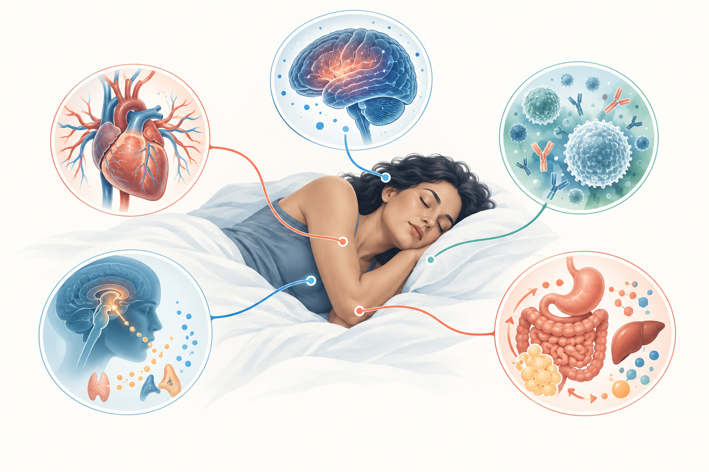
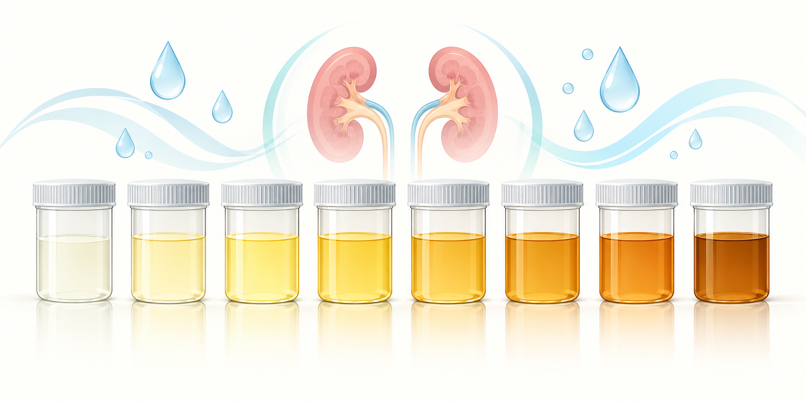
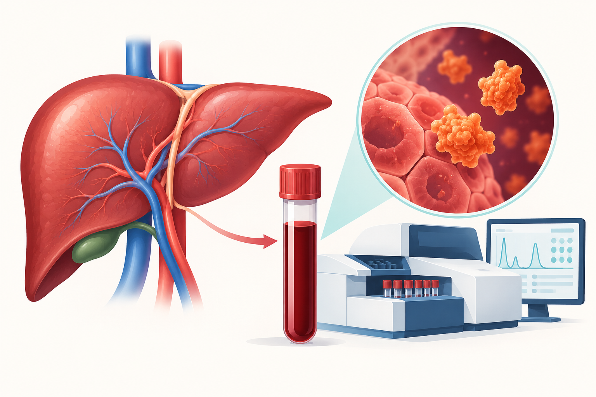
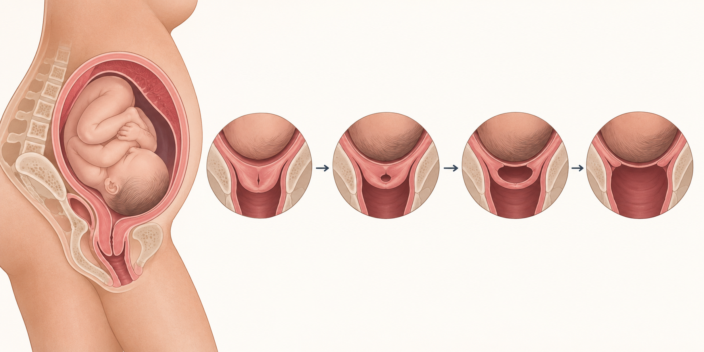
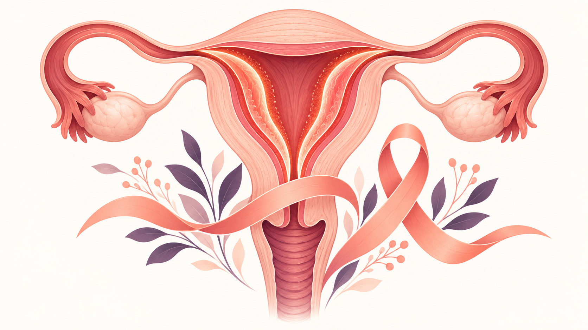
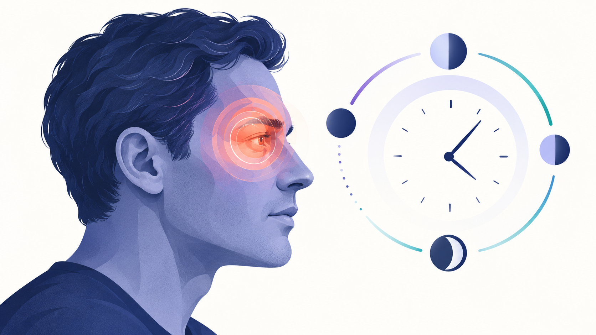
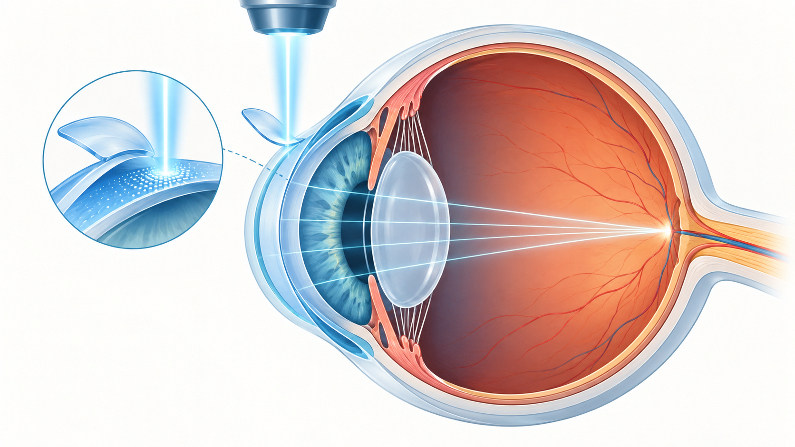
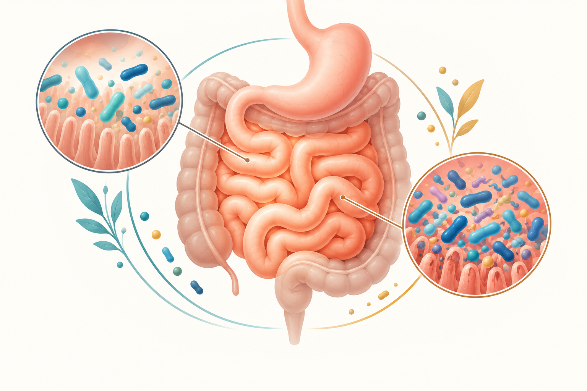
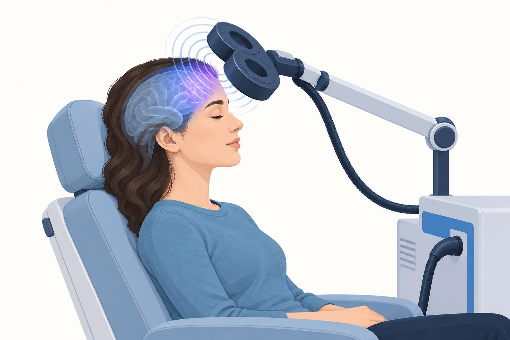
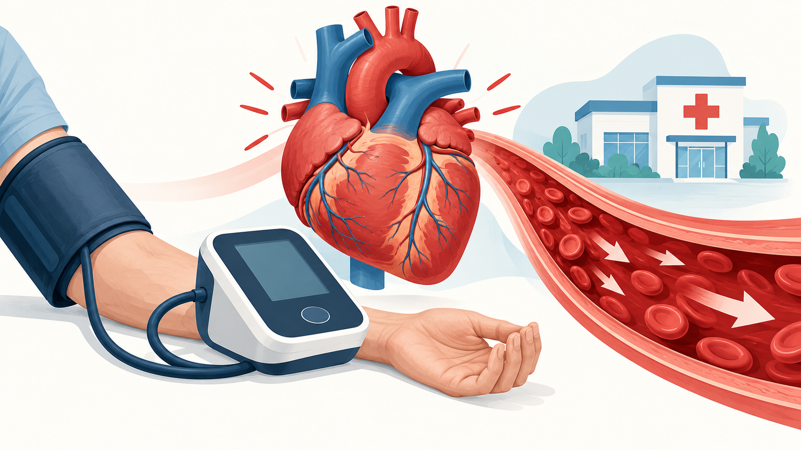

01 · Sleep & Public Health
Sleep Deprivation and Its Effects on the Body
A practical guide to short- and long-term effects, healthier sleep habits, and signs that warrant professional help.
↓ Download Word sampleA ten-piece collection of patient-friendly healthcare articles. Each sample combines an accessible structure, careful language, a custom medical illustration, and a reference list built from authoritative health sources.
Select any article to download the complete Word sample.

A practical guide to short- and long-term effects, healthier sleep habits, and signs that warrant professional help.
↓ Download Word sample
A careful explanation of hydration, food and medication effects, common color changes, and medical red flags.
↓ Download Word sample
An approachable diagnostic explainer covering why AST is ordered, what results can suggest, and why context matters.
↓ Download Word sample
A reassuring stage-by-stage overview of dilation, active labor, what progress can look like, and when to contact the care team.
↓ Download Word sample
A sensitive overview of warning signs, risk factors, diagnostic steps, treatment options, and the value of early evaluation.
↓ Download Word sample
A plain-language guide distinguishing cluster headache from migraine and explaining acute care, prevention, and emergencies.
↓ Download Word sample
A balanced procedure guide covering evaluation, what happens during LASIK, recovery, expected benefits, and limitations.
↓ Download Word sample
A reader-focused explanation of small intestinal bacterial overgrowth, diagnostic limitations, treatment, and recurrence.
↓ Download Word sample
A calm, accessible introduction to rTMS, including common uses, what treatment feels like, side effects, and safety.
↓ Download Word sample
A safety-first response guide for readings at or above 180/120, including repeat measurement, warning symptoms, and urgent action.
↓ Download Word sampleThese portfolio samples are educational writing, not individualized medical advice. Their reference lists are included in the downloadable documents.